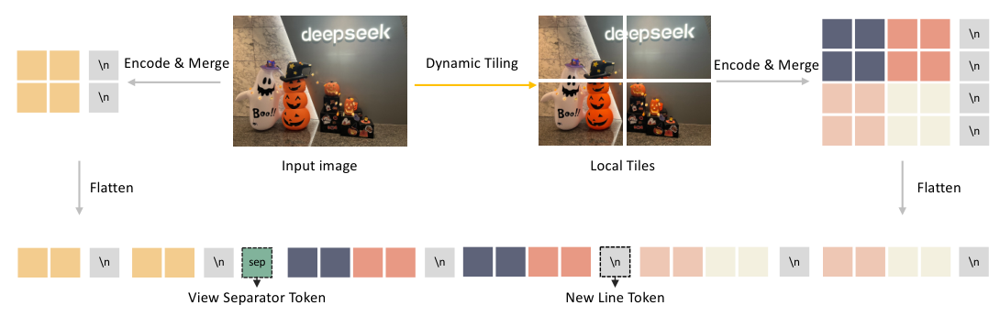

DeepSeek-VL2：动态切图、视觉定位与稀疏多模态模型¶
💡 VL2 用动态切图保留高分辨率与极端长宽比信息，再以稀疏 MoE 处理图文序列，扩展文档、图表、OCR 和定位能力。
初代 VL 用固定分辨率 SigLIP+SAM 融合视觉特征，但长文档、信息图和密集 OCR 经固定缩放后仍会丢失细节。VL2 因而改用单个 SigLIP 编码器处理动态切出的局部图块，结合全局缩略图和二维分隔标记，把可变分辨率输入转成可控的视觉序列。语言侧引入 MoE，并按不同规模配置注意力与路由。报告不仅比较视觉问答，还系统构建 grounding、grounded conversation 与跨图定位数据；其价值在于从“看懂整图”扩展到文档细节、区域指代和结构化输出，同时控制激活计算。
动态切图如何变成 token¶

视觉编码器为 SigLIP-SO400M-384。候选画布为 \((384m,384n)\)，满足 \(1\le mn\le9\)；按保持比例缩放后的 padding 面积选择最合适画布，再切成 \(m\times n\) 个局部块，加一张全局缩略图。它不是把任意长图都压成一个正方形。
每块得到 \(27\times27=729\) 个、1152 维的特征，经 \(2\times2\) pixel shuffle 压至 \(14\times14=196\) 个。全局每行加 newline 后为 210 token；局部块按二维网格拼接，各行加 newline，两视图间有 separator。因此总数为：
newline 让 LLM 看到二维布局，separator 区分全图和局部。切图越多 token 越多；当一次处理超过两张图时，报告关闭动态切图，以限制上下文开销。
语言主干的规模差异¶
| DeepSeek-VL2-Tiny | DeepSeek-VL2-Small | DeepSeek-VL2 | |
|---|---|---|---|
| Vocabulary size | 129,280 | 102,400 | 129,280 |
| Embedding size | 1,280 | 2,048 | 2,560 |
| #Attention heads | 10 | 16 | 32 |
| #Layers | 12 | 27 | 30 |
| Attention | Multi-Head Attention | MLA (rank=512) | MLA (rank=512) |
| #Routed experts | 64 | 64 | 72 |
| #Shared experts | 2 | 2 | 2 |
| Top-K for expert selection | 6 | 6 | 6 |
| Routing function | Softmax | Softmax | Sigmoid |
| Expert correction bias | \(\times\) | \(\times\) | ✓ |
Tiny/Small/完整款的 LLM 总参数约 3B/16B/27B，语言部分激活 0.57B/2.4B/4.1B；含视觉模块后的对外激活规模为 1.0B/2.8B/4.5B。两种口径不能混用。
**Tiny 使用 MHA，Small 和完整款使用 rank=512 的 MLA；只有完整款采用 sigmoid 与专家 correction bias。**不能把系列整体宣传中的 MLA/均衡偏置套到每一个型号。MLA 缓解图文长序列的 KV 存储，MoE 则减少每 token 的 FFN 激活计算，两者作用不同。
数据：质量、任务覆盖与定位协议¶
联合预训练约 70% VL、30% 纯文本，与初代 VL 的主配比方向不同。交错图文来自 WIT、WikiHow、部分 OBELICS、中文万卷及内部来源；描述数据利用 OCR 提示、元信息和原始 caption 重新标注，再过滤重复与低质量表达。
OCR 包含 LaTeX、RenderedText 和内部中英文文档；QA 覆盖表格、图表、文档、网页转代码、图转 Python、箭头/方框等视觉提示。生成的代码与问答会重新清洗或由较强模型重写，降低原始数据噪声。
定位使用显式引用与检测标记：<|ref|>对象描述<|/ref|><|det|>[[x1,y1,x2,y2]]<|/det|>。坐标归一化到 0–999，补充查询对象不存在的负样本。Grounded conversation 将这些区域标记插入自然语言回复；跨图任务则给一张带标记的参考图，要求在另一张图中找同类对象。
这些能力依赖明确的任务数据和输出协议，不是只换 MoE 后自然出现的结果。SFT 还加入 meme、中文对话、低质量图像处理和纯文本指令等。
三阶段训练与系统¶
先用约 120 万 ShareGPT4V 样本做视觉—语言对齐，冻结 LLM，更新视觉编码器与 adaptor，使固定分辨率预训练编码器适应动态输入；随后全部解冻，开展约 800B 图文 token 的联合预训练；最后做混合指令微调，仅监督回答及特殊 token。
| DeepSeek-VL2-Tiny | DeepSeek-VL2-Tiny | DeepSeek-VL2-Tiny | DeepSeek-VL2-Small | DeepSeek-VL2-Small | DeepSeek-VL2-Small | DeepSeek-VL2 | DeepSeek-VL2 | DeepSeek-VL2 | |
|---|---|---|---|---|---|---|---|---|---|
| Total parameters (LLM) | 3B | 3B | 3B | 16B | 16B | 16B | 27B | 27B | 27B |
| Activated parameters (LLM) | 0.57B | 0.57B | 0.57B | 2.4B | 2.4B | 2.4B | 4.1B | 4.1B | 4.1B |
| Vision Encoder | SigLIP-SO400M | SigLIP-SO400M | SigLIP-SO400M | SigLIP-SO400M | SigLIP-SO400M | SigLIP-SO400M | SigLIP-SO400M | SigLIP-SO400M | SigLIP-SO400M |
| Hyperparameters | Stage 1 | Stage 2 | Stage 3 | Stage 1 | Stage 2 | Stage 3 | Stage 1 | Stage 2 | Stage 3 |
| Learning rate | \(5.4\times 10^{-4}\) | \(5.4\times 10^{-4}\) | \(3.0\times 10^{-5}\) | \(4.2\times 10^{-4}\) | \(4.2\times 10^{-4}\) | \(1.4\times 10^{-5}\) | \(4.5\times 10^{-4}\) | \(4.5\times 10^{-4}\) | \(2\times 10^{-5}\) |
| Visual Encoder LR multiplier | 0.1 | 0.1 | 0.1 | 0.1 | 0.1 | 0.1 | 0.1 | 0.1 | 0.1 |
| Fix langauge model | ✓ | \(\times\) | \(\times\) | ✓ | \(\times\) | \(\times\) | ✓ | \(\times\) | \(\times\) |
| LR scheduler | Cosine | Step | Constant | Cosine | Step | Constant | Cosine | Step | Constant |
| Weight decay | 0.1 | 0.1 | 0.1 | 0.1 | 0.1 | 0.1 | 0.1 | 0.1 | 0.1 |
| Gradient clip | 1.0 | 1.0 | 1.0 | 1.0 | 1.0 | 1.0 | 1.0 | 1.0 | 1.0 |
| Optimizer | AdamW( \(\beta_{1}=0.9,\beta_{2}=0.95\) ) | AdamW( \(\beta_{1}=0.9,\beta_{2}=0.95\) ) | AdamW( \(\beta_{1}=0.9,\beta_{2}=0.95\) ) | AdamW( \(\beta_{1}=0.9,\beta_{2}=0.95\) ) | AdamW( \(\beta_{1}=0.9,\beta_{2}=0.95\) ) | AdamW( \(\beta_{1}=0.9,\beta_{2}=0.95\) ) | AdamW( \(\beta_{1}=0.9,\beta_{2}=0.95\) ) | AdamW( \(\beta_{1}=0.9,\beta_{2}=0.95\) ) | AdamW( \(\beta_{1}=0.9,\beta_{2}=0.95\) ) |
| BF16 optimizer | \(\times\) | \(\times\) | \(\times\) | \(\times\) | \(\times\) | \(\times\) | ✓ | ✓ | ✓ |
| Aux loss weight | 0.001 | 0.001 | 0.001 | 0.001 | 0.001 | 0.001 | 0.0001 | 0.0001 | 0.0001 |
| Expert bias correction step | - | - | - | - | - | - | 0 | 0.001 | 0 |
| Training tokens | \(2.0\) B | \(798.5\) B | \(19.5\) B | \(2.0\) B | \(808.9\) B | \(20.0\) B | \(2.0\) B | \(796.5\) B | \(19.5\) B |
| Batch size | 256 | 2304 | 64 | 256 | 2304 | 64 | 256 | 3360 | 64 |
| Sequence length | 4096 | 4096 | 4096 | 4096 | 4096 | 4096 | 4096 | 4096 | 4096 |
| Sequence packing | \(\times\) | ✓ | ✓ | \(\times\) | ✓ | ✓ | \(\times\) | ✓ | ✓ |
| Pipeline parallelism | \(\times\) | ✓ | ✓ | ✓ | ✓ | ✓ | ✓ | ✓ | ✓ |
训练使用 HAI-LLM，视觉编码器被细分到流水线不同 stage；动态图片块会造成 DP ranks 间不均衡，因此还平衡 tile 负载。纯文本和图文 batch 使用不同流水线策略，并结合 TP/EP。三个规模分别约 7/10/14 天，16/33/42 个八卡 A100 节点。
文档、综合理解与定位结果¶
| Model | #Params (LLM) | #Params (VE) | #Params (Activated) | DocVQA | ChartQA | InfoVQA | TextVQA | OCRBench |
|---|---|---|---|---|---|---|---|---|
| Model | #Params (LLM) | #Params (VE) | #Params (Activated) | (test) | (test) | (test) | (val) | |
| GPT-4V [ 69 ] | - | - | - | 87.2 | 78.1 | 75.1 | 78.0 | 645 |
| GPT-4o [ 32 ] | - | - | - | 92.8 | 85.7 | 79.2 | 77.4 | 736 |
| Claude 3.5 Sonnet [ 5 ] | - | - | - | 95.2 | 90.8 | 74.1 | 74.1 | 788 |
| Gemini-1.5-Pro [ 81 ] | - | - | - | 93.1 | 87.2 | 80.1 | 78.7 | 754 |
| LLaVA-OV 0.5B [ 45 ] | 0.5B | 0.4B | 0.9B | 70.0 | 61.4 | 41.8 | - | - |
| InternVL2-1B [ 16 ] | - | - | 0.9B | 81.7 | 72.9 | 50.9 | 70.5 | 754 |
| MM 1.5-1B [ 107 ] | - | - | 1B | 81.0 | 67.2 | 50.5 | 72.5 | 605 |
| DeepSeek-VL2-Tiny | 0.6B † | 0.4B | 1.0B † | 88.9 | 81.0 | 66.1 | 80.7 | 809 |
| MolmoE-1B [ 22 ] | 1.2B † | 0.3B | 1.5B † | 77.7 | 78.0 | 53.9 | 78.8 | |
| MiniCPM-V 2.0 [ 99 ] | 2.4B | 0.4B | 2.8B | 71.9 | - | - | 74.1 | 605 |
| InternVL2-2B [ 16 ] | 1.9B | 0.3B | 2.2B | 86.9 | 76.2 | 58.9 | 73.4 | 784 |
| Qwen2-VL-2B [ 88 ] | 1.5B | 0.7B | 2.2B | 90.1 | 73.5 | 65.5 | 79.7 | 794 |
| MM 1.5-3B [ 107 ] | - | - | 3B | 87.7 | 74.2 | 58.5 | 76.5 | 657 |
| DeepSeek-VL2-Small | 2.4B † | 0.4B | 2.8B † | 92.3 | 84.5 | 75.8 | 83.4 | 834 |
| Phi-3.5-Vision [ 1 ] | 3.8B | 0.3B | 4.1B | 69.3 | 81.8 | 36.6 | 72.0 | 599 |
| InternVL2-4B [ 16 ] | 3.8B | 0.3B | 4.1B | 89.2 | 81.5 | 67.0 | 74.4 | 788 |
| Aria-MoE [ 46 ] | 3.9B † | 0.4B | 4.3B † | 92.6 | 86.4 | - | 81.1 | - |
| MM 1.5-7B [ 107 ] | - | - | 7B | 88.1 | 78.6 | 59.5 | 76.5 | 635 |
| LLaVA-OV 7B [ 45 ] | 7.6B | 0.4B | 8.0B | 87.5 | 80.0 | 68.8 | - | - |
| Molmo-7B-O [ 22 ] | 7.3B | 0.3B | 7.6B | - | 80.4 | 70.0 | 80.4 | - |
| MiniCPM-V2.6 [ 99 ] | 7.6B | 0.4B | 8.0B | 90.8 | 82.4 | - | 80.1 | 852 (CoT) |
| InternVL2-8B [ 16 ] | 7.7B | 0.3B | 8.0B | 91.6 | 83.3 | 74.8 | 77.4 | 794 |
| Qwen2-VL-7B [ 88 ] | 7.6B | 0.7B | 8.3B | 94.5 | 83.0 | 76.5 | 84.3 | 845 |
| Pixtral-12B [ 3 ] | 12.0B | 0.4B | 12.4B | 90.7 | 81.8 (CoT) | 50.8 | 75.7 | |
| DeepSeek-VL 7B [ 59 ] | 6.9B | 0.4B | 7.3B | - | - | - | - | 456 |
| DeepSeek-VL2 | 4.1B † | 0.4B | 4.5B † | 93.3 | 86.0 | 78.1 | 84.2 | 811 |
DocVQA、ChartQA、InfoVQA、TextVQA 与 OCRBench 分别衡量文档、图表、信息图、场景文字和综合 OCR；OCRBench 使用原始分值，不与其他百分数直接相加。表中的低激活量表现说明稀疏架构有较好的计算效率，但完整权重仍需存储。
| Model | #Params | MMStar | AI2D | MMMU | MME | MMBench | MMBench | MMBench-V1.1 | MMT-Bench | RealWorldQA | MathVista |
|---|---|---|---|---|---|---|---|---|---|---|---|
| Model | (Activated) | (test) | (val) | (sum) | (en test) | (cn test) | (testmini) | ||||
| GPT-4V [ 69 ] | - | 56.0 | 89.4 | 63.1 | 1,927 | 81 | 80.2 | 80 | 64.3 | 61.4 | 58.1 |
| GPT-4o [ 32 ] | - | 63.9 | 94.2 | 69.1 | 2,329 | 83.4 | 82.1 | 82.2 | 65.5 | 75.4 | 63.8 |
| Claude 3.5 Sonnet [ 5 ] | - | 62.2 | 94.7 | 68.3 | 1,920 | 79.7 | 80.7 | 78.5 | - | 60.1 | 67.7 |
| Gemini-1.5-Pro [ 81 ] | - | - | 94.4 | 62.2 | - | - | - | - | 64.5 | 70.4 | 63.9 |
| LLaVA-OV 0.5B [ 45 ] | 0.9B | 37.7 | 57.1 | 31.4 | 1,478 | 61.6 | 55.5 | 59.6 | - | 55.6 | 34.8 |
| InternVL2-1B [ 16 ] | 0.9B | 45.7 | 64.1 | 35.4 | 1,794 | 65.4 | 60.7 | 61.6 | 49.5 | 50.3 | 37.7 |
| MM 1.5-1B [ 107 ] | 1B | - | 59.3 | 35.8 | 1,611 | - | - | - | - | 53.3 | 37.2 |
| DeepSeek-VL2-Tiny | 1.0B † | 45.9 | 71.6 | 40.7 | 1,915 | 73.3 | 69.2 | 68.3 | 53.2 | 64.2 | 53.6 |
| MolmoE-1B [ 22 ] | 1.5B † | - | 86.4* | 34.9 | - | - | - | - | - | 60.4 | 34 |
| MiniCPM-V 2.0 [ 99 ] | 2.8B | - | - | 38.2 | 1,809 | 69.6 | 68.1 | - | - | - | 38.7 |
| InternVL2-2B [ 16 ] | 2.2B | 49.8 | 74.1 | 36.3 | 1,877 | 73.2 | 70.9 | 69.6 | 50.4 | 57.3 | 46.3 |
| Qwen2-VL-2B [ 88 ] | 2.2B | 48 | 74.4 | 41.1 | 1,872 | 74.9 | 73.5 | 72.2 | 54.5 | 62.9 | 47.8 |
| MM 1.5-3B [ 107 ] | 3B | - | 65.7 | 37.1 | 1,798 | - | - | - | - | 56.9 | 44.4 |
| DeepSeek-VL2-Small | 2.8B † | 57.0 | 80.0 | 48.0 | 2,123 | 82.3 | 80.3 | 79.3 | 62.9 | 65.4 | 60.7 |
| Phi-3.5-Vision [ 1 ] | 4.1B | 47.5 | 78.1 | 43 | - | 76 | 66.1 | 72.1 | 53.6 | 53.6 | 43.9 |
| InternVL2-4B [ 16 ] | 4.1B | 54.3 | 78.9 | 47.9 | 2,060 | 78.6 | 73.9 | 75.8 | 55.7 | 60.7 | 58.6 |
| Aria-MoE [ 46 ] | 4.3B † | - | - | 54.9 | - | - | - | - | - | - | 66.1 |
| MM 1.5-7B [ 107 ] | 7B | - | 72.2 | 41.8 | 1,861 | - | - | - | - | 62.5 | 47.6 |
| LLaVA-OV 7B [ 45 ] | 8.0B | - | 81.4 | 48.8 | 1,998 | 80.8 | - | - | - | 66.3 | 63.2 |
| Molmo-7B-O [ 22 ] | 7.6B † | - | 90.7* | 39.3 | - | - | - | - | - | 67.5 | 44.5 |
| MiniCPM-V2.6 [ 99 ] | 8.0B | 57.5 | 82.1 | 49.8 (CoT) | 2,348 (CoT) | 81.5 | 79.3 | 78.0 | 60.8 | 65.0 | 60.6 |
| InternVL2-8B [ 16 ] | 8.0B | 61.5 | 83.8 | 51.8 | 2,210 | 81.7 | 81.2 | 79.4 | 60.0 | 64.4 | 58.3 |
| Qwen2-VL-7B [ 88 ] | 8.3B | 60.7 | 83 | 54.1 | 2,327 | 83 | 80.5 | 80.7 | 63.7 | 70.1 | 58.2 |
| Pixtral-12B [ 3 ] | 12.4B | - | - | 52.5 (CoT) | - | - | - | - | - | 65.4 | 58 (CoT) |
| DeepSeek-VL 7B [ 59 ] | 7.3B | - | - | 36.6 | - | 73.2 | - | - | - | - | - |
| DeepSeek-VL2 | 4.5B † | 61.3 | 81.4 | 51.1 | 2,253 | 83.1 | 79.6 | 79.2 | 63.6 | 68.4 | 62.8 |
综合表同时报告 LLM 参数、视觉模块和具体任务成绩。系列在相近激活量下有竞争力，但不同数据和总参数的系统对比不能解释成 MoE 单独带来的净增益。
| Model | RefCOCO | RefCOCO | RefCOCO | RefCOCO+ | RefCOCO+ | RefCOCO+ | RefCOCOg | RefCOCOg |
|---|---|---|---|---|---|---|---|---|
| Model | val | testA | testB | val | testA | testB | val | test |
| Grounding DINO-Tiny [ 56 ] | 89.2 | 91.9 | 86.0 | 81.1 | 87.4 | 74.7 | 85.2 | 84.9 |
| Grounding DINO-Largey [ 56 ] | 90.6 | 93.2 | 88.2 | 82.8 | 89.0 | 75.9 | 86.1 | 87.0 |
| UNINEXT-H [ 52 ] | 92.6 | 94.3 | 91.5 | 85.2 | 89.6 | 79.8 | 88.7 | 89.4 |
| ONE-PEACE [ 87 ] | 92.6 | 94.2 | 89.3 | 88.8 | 92.2 | 83.2 | 89.2 | 89.3 |
| mPLUG-2 [ 97 ] | 90.1 | 92.8 | 86.1 | - | - | 86.1 | 84.7 | 85.1 |
| Florence-2-B [ 96 ] | 92.6 | 94.8 | 91.5 | 86.8 | 91.7 | 82.2 | 89.8 | 82.2 |
| Florence-2-L [ 96 ] | 93.4 | 95.3 | 92.0 | 88.3 | 92.9 | 83.6 | 91.2 | 91.7 |
| InternVL2-1B [ 16 ] | 83.6 | 88.7 | 79.8 | 76.0 | 83.6 | 67.7 | 80.2 | 79.9 |
| DeepSeek-VL2-Tiny | 84.7 | 87.8 | 78.4 | 75.9 | 83.9 | 67.4 | 73.8 | 83.9 |
| InternVL2 - 2B [ 16 ] | 82.3 | 88.2 | 75.9 | 73.5 | 82.8 | 63.3 | 77.6 | 78.3 |
| DeepSeek-VL2-Small | 93.9 | 95.3 | 91.3 | 89.4 | 92.9 | 84.8 | 92.6 | 92.6 |
| Shikra-7B [ 11 ] | 87.0 | 90.6 | 80.2 | 81.6 | 87.4 | 72.1 | 82.3 | 82.2 |
| TextHawk2-7B [ 103 ] | 91.9 | 93.0 | 87.6 | 86.2 | 90.0 | 80.4 | 88.2 | 88.1 |
| Ferret-v2-7B [ 108 ] | 92.8 | 94.7 | 88.7 | 87.4 | 92.8 | 79.3 | 89.4 | 89.3 |
| InternVL2-8B [ 16 ] | 87.1 | 91.1 | 80.7 | 79.8 | 87.9 | 71.4 | 82.7 | 82.7 |
| MM1.5-7B [ 107 ] | - | 92.5 | 86.7 | - | 88.7 | 77.8 | - | 87.1 |
| Qwen2-VL-7B [ 88 ] | 91.7 | 93.6 | 87.3 | 85.8 | 90.5 | 79.5 | 87.3 | 87.8 |
| DeepSeek-VL2 | 95.1 | 96.7 | 92.7 | 91.2 | 94.9 | 87.4 | 92.8 | 92.9 |
RefCOCO/+/g 检查区域定位，在不同划分与描述分布下报告准确率。它补充普通 VQA 无法体现的空间能力，仍不等于开放世界目标检测的完整评价。
报告边界与局限¶
VL2 的正文以架构、训练配方及最终系统结果为主，没有逐一隔离动态切图、数据清洗和 MoE 的全部独立消融，因此不能为每个模块编造单项提升。示例展示多图、故事、定位对话，但不是相应能力的完整失败率统计。
上下文仅支持有限图像，动态切图在多图时受限；模糊输入和未见对象仍会出错，视觉推理也有提升空间。作者给出的单 GPU 10/40/80GB 部署条件对应三个规模，不能直接当作任意长图与 batch 的显存上限。VL2 的主要进步是用动态视觉序列与稀疏语言主干，扩大可处理的文档和定位任务范围。